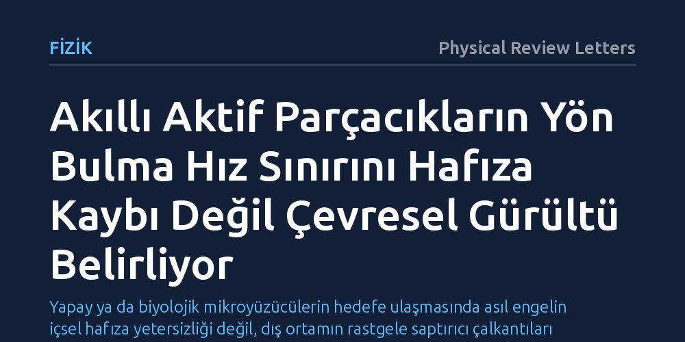

FIZIK · Physical Review Letters · 2026-10-12
Araştırmacılar, asgari bilgi işleme kapasitesine sahip akıllı mikroparçacıkların uzak bir hedefe yönelme hızını kuramsal olarak modelledi. Çalışma, yönelme hızındaki temel sınırın hafızadaki silinmeden ziyade çevresel yönelim gürültüsünden kaynaklandığını ortaya koydu.
Yapay ya da biyolojik mikroyüzücülerin hedefe ulaşmasında asıl engelin içsel hafıza yetersizliği değil, dış ortamın rastgele saptırıcı çalkantıları olduğunu gösterir.

Biyolojik sistemlerde ve canlı benzeri yapılarda zeki davranışların temelinde, çevreden bilgi toplama, bu bilgiyi işleme ve ardından amaca uygun eyleme geçme yeteneği yatar. Kendi enerjisini kullanarak hareket eden mikroskobik yapıları inceleyen aktif madde fiziği, bugüne kadar parçacıkların mekanik hareketlerini başarıyla açıklamış olsa da içsel karar alma ve bilgi işleme süreçlerini çoğunlukla denklemlerin dışında bırakmıştır. Bakterilerden sentetik mikroyüzücülere kadar pek çok parçacık, bir hedefe ulaşmaya çalışırken çevreyle sürekli bir bilgi etkileşimi içerisindedir.
Ancak mikroskobik ölçekte hedefe doğru kararlı bir rota izlemek son derece zordur. Ortamdaki rastgele termal çalkantılar ve akışkan kuvvetleri parçacığın yönünü sürekli saptırır. Bir parçacığın hedefe ulaşabilmesi için çevreyi ne kadar süre algılaması gerektiği ve toplanan bilginin ilerleme hızını nasıl sınırladığı temel bir fiziksel problemdir. Bu problem hem canlıların yön bulma mekanizmalarını anlamak hem de gelecekte insan vücudunda hedefe ilaç taşıyacak yapay mikrorobotları tasarlayabilmek açısından büyük önem taşır.
Araştırmacılar bu soruyu yanıtlamak için asgari düzeyde bilgi işleme kapasitesine sahip uyarlanabilir bir aktif parçacık modeli geliştirdi. Model, biyolojik sistemlerde sıkça gözlenen kesintili hareket mekanizmasına dayanır. Parçacık önce belirli bir süre duraklayarak çevresinden hedefin doğrultusuna dair bilgi toplar; ardından edindiği bu doğrultu bilgisine göre hedefe doğru hareket eder. Bu algılama ve hareket döngüsü yenilenerek parçacığın hedefe adım adım ilerlemesi sağlanır.
Süreçteki sınırları belirlemek amacıyla istatistiksel bilgi kuramının temel araçlarından olan Cramér-Rao eşitsizliği kullanıldı. Bu eşitsizlik, toplanan verilerden hedefin doğrultusunun hangi kesinlikle tahmin edilebileceğinin kuramsal alt sınırını gösterir. Araştırmacılar ayrıca hafızada depolanan bilginin eyleme geçene kadar geçen sürede bozulup zayıflamasına da izin vererek, gerçekçi bilişsel kısıtları matematiksel modele dahil etti.
Analizler, bilgi işleme stratejisi ne olursa olsun parçacığın hedefe doğru ilerleme hızının bilgi kuramından gelen kesin bir sınırla kısıtlandığını gösterdi. Parçacık bilgi toplamak için ne kadar uzun süre duraklarsa yön tahmini o kadar güvenilir hale gelmekte, ancak duraklama süresi uzadıkça hareket için harcanan zaman azaldığından genel ilerleme yavaşlamaktadır. Model, gürültü ile güvenilirlik arasında en uygun dengeyi kuran ideal bir algılama süresinin var olduğunu ortaya koydu.
Çalışmanın en dikkat çekici bulgusu hafızadaki bilgi kaybıyla ilgilidir. Hafızada tutulan bilginin zamanla bozulması parçacığın yönelme hızını düşürse de hız ile doğruluk arasındaki temel dengeyi bozamamaktadır. Yönelme hızını belirleyen asıl sınırın hafızadaki aşınmadan değil, dış ortamdan kaynaklanan yönelimsel gürültüden ileri geldiği ve sistemin bellek kaybına karşı şaşırtıcı biçimde duyarsız kaldığı saptandı.
Elde edilen sonuçlar, mikroskobik canlıların yön bulurken neden gelişmiş ve maliyetli hafıza sistemleri kurmak yerine çevresel gürültüyü yönetmeye odaklandığını açıklamaktadır. Kısıtlı bir enerji bütçesine sahip mikroorganizmalar için hafızayı kusursuz tutmaya çalışmaktansa, dış ortamın yön saptırıcı çalkantılarına hızla uyum sağlamak çok daha rasyonel bir fiziksel stratejidir.
Bu ilkeler mikrorobotik ve akıllı malzeme mühendisliği için de doğrudan yol göstericidir. Belirli bir hedef noktaya yönlendirilmesi hedeflenen yapay mikroyüzücüler tasarlanırken karmaşık hafıza birimleri inşa etmek yerine, çevresel gürültünün rotayı bozma hızına uyumlu çevik algılama döngüleri kurmak hedefe ulaşma hızını en üst düzeye çıkaracaktır.